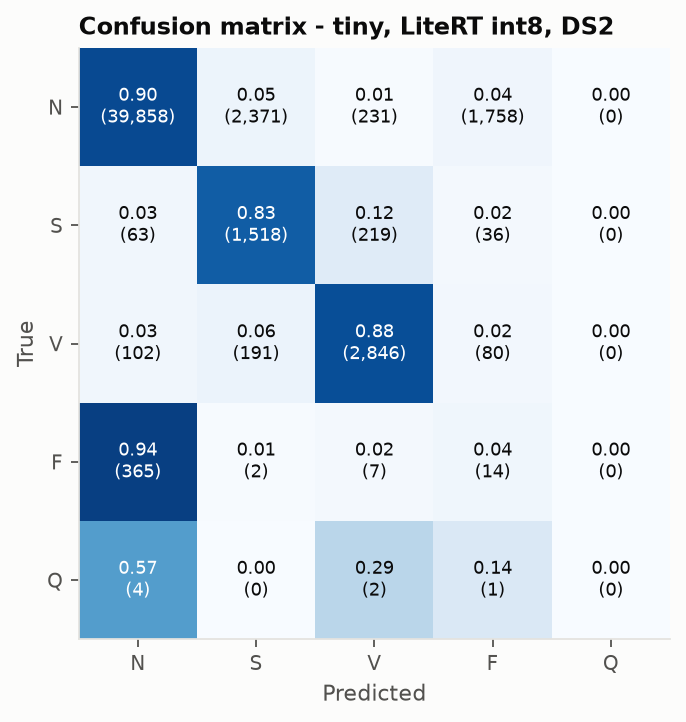
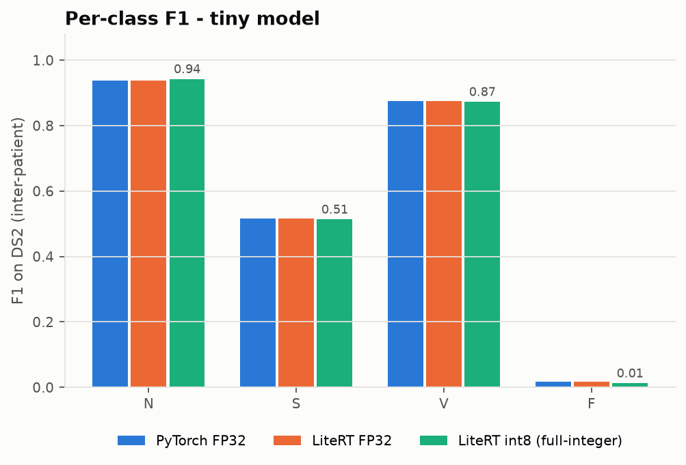
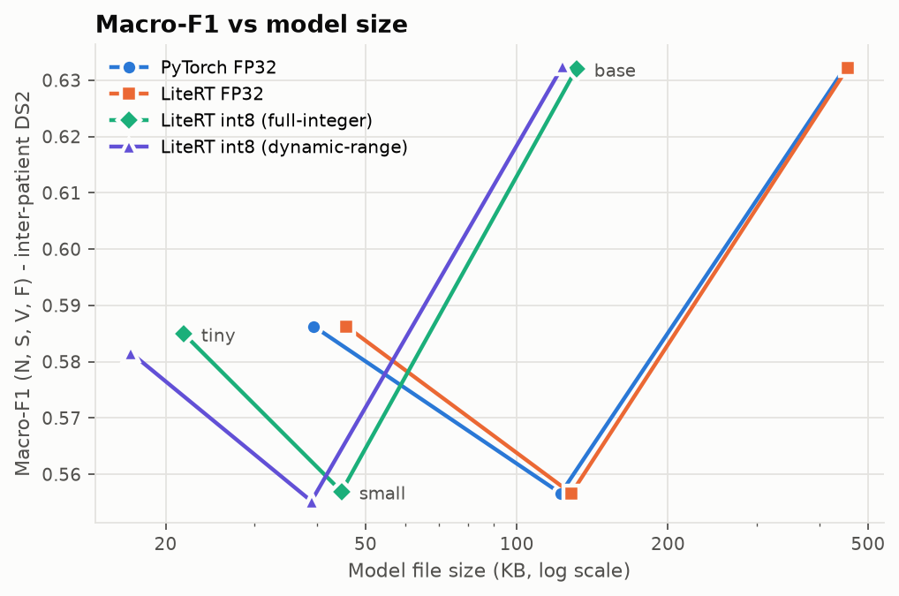
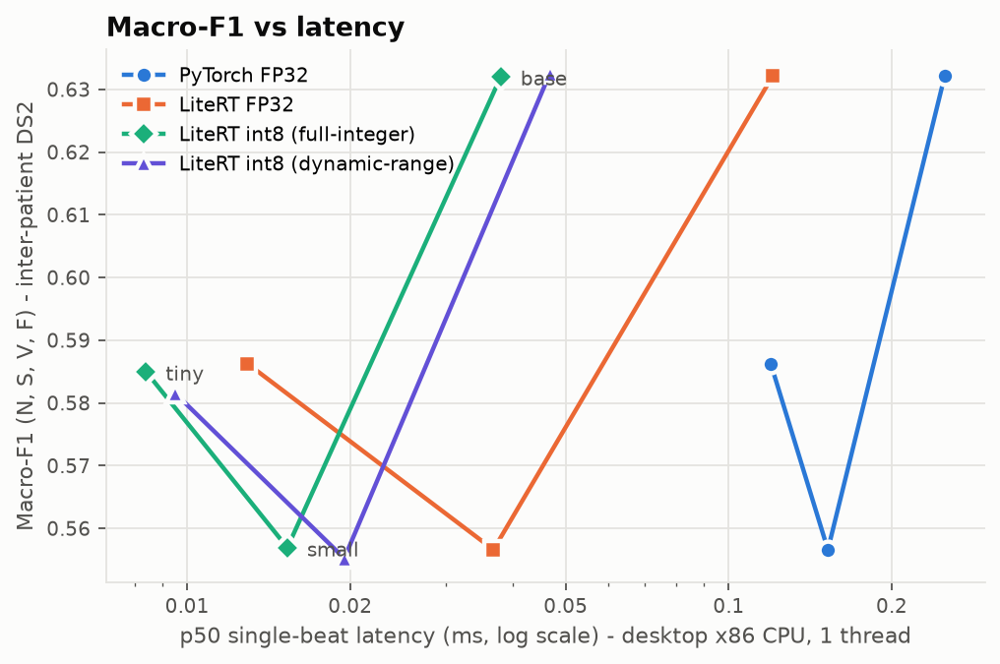
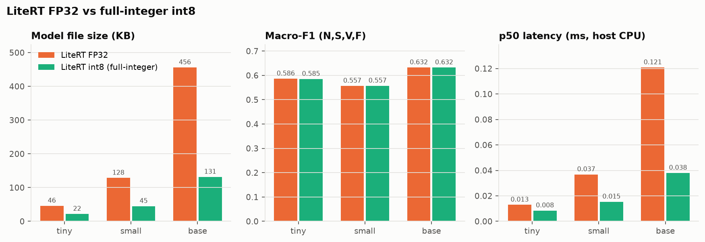
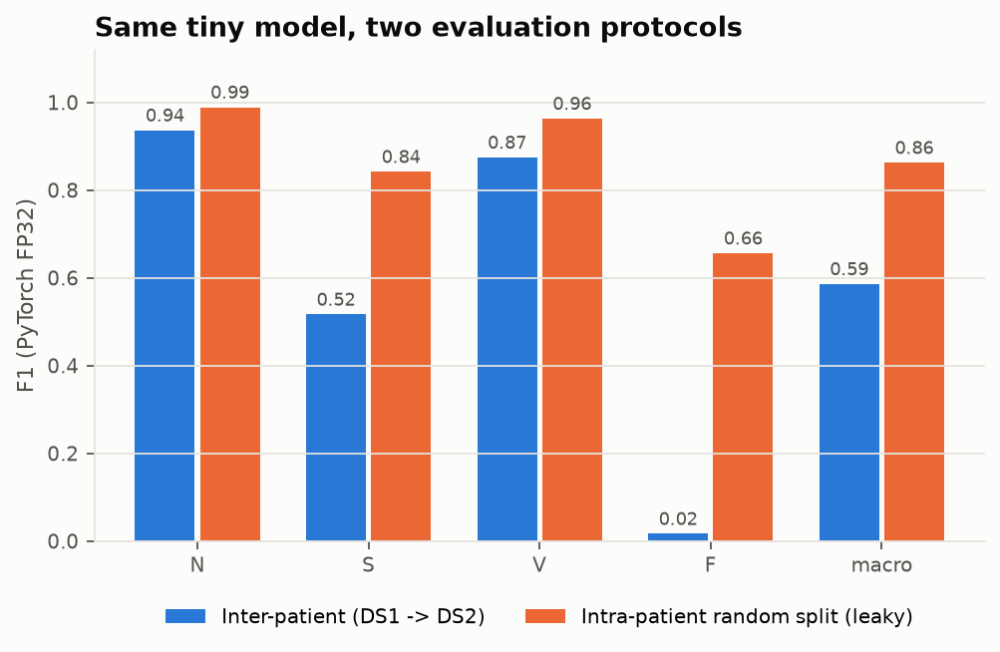

On-Device ECG Arrhythmia Classifier
A compact 1D-CNN + RR-interval model trained on MIT-BIH, quantised to full-integer int8 with post-training quantisation and deployed with LiteRT. Evaluated the honest way: on patients the model never saw.
Best model (tiny, chosen on validation): full-integer int8 LiteRT, 21.7 KB, macro-F1 0.585 (N,S,V,F) and accuracy 0.891 on 49,668 beats from 22 unseen patients (DS2); 2.1x smaller than its FP32 .tflite with a macro-F1 change of -0.0013; p50 single-beat latency 0.008 ms (Desktop x86_64 CPU (12th Gen Intel(R) Core(TM) i5-12500H), 1 thread, batch 1 - NOT a phone).
Live demo - int8 LiteRT running in your browser
The page below downloads the same ecg_int8.tflite file that is benchmarked in the repo and runs it with LiteRT.js (WebAssembly, CPU). Segments are 10 s of MLII lead from DS2 test patients. Each browser prediction is checked against the Python LiteRT output for the same input.
| # | t (s) | True | Pred | p(N) | p(S) | p(V) | p(F) | p(Q) | Matches Python |
|---|
Headline - best variant, inter-patient DS2
| Model | Size (KB) | Accuracy | Macro-F1 (N,S,V,F) | F1 N | F1 S | F1 V | F1 F | p50 latency (ms) |
|---|---|---|---|---|---|---|---|---|
| tiny - PyTorch FP32 | 39.4 | 0.882 | 0.586 | 0.937 | 0.517 | 0.875 | 0.017 | 0.120 |
| tiny - LiteRT FP32 | 45.8 | 0.882 | 0.586 | 0.937 | 0.517 | 0.875 | 0.017 | 0.013 |
| tiny - LiteRT int8 (full-integer) | 21.7 | 0.891 | 0.585 | 0.942 | 0.513 | 0.872 | 0.012 | 0.008 |
| Class | Support | Precision (PPV) | Recall (Se) | F1 |
|---|---|---|---|---|
| N | 44,218 | 0.987 | 0.901 | 0.942 |
| S | 1,836 | 0.372 | 0.827 | 0.513 |
| V | 3,219 | 0.861 | 0.884 | 0.872 |
| F | 388 | 0.007 | 0.036 | 0.012 |
| Q | 7 | 0.000 | 0.000 | 0.000 |


Accuracy vs model size vs latency


Latency measured on 12th Gen Intel(R) Core(TM) i5-12500H (x86_64, Linux 6.18.33.2-microsoft-standard-WSL2, WSL2), Python 3.12.15, 1 thread, batch 1, 100 warm-up + 1000 timed runs. This is desktop x86 CPU latency, not phone latency - see scripts/android_benchmark.md for on-device measurement.
| Variant | Runtime | Params | Size (KB) | Accuracy | Macro-F1 | F1 N | F1 S | F1 V | F1 F | p50 (ms) | p95 (ms) | Beats/s |
|---|---|---|---|---|---|---|---|---|---|---|---|---|
| tiny | PyTorch FP32 | 7,285 | 39.4 | 0.882 | 0.586 | 0.937 | 0.517 | 0.875 | 0.017 | 0.120 | 0.166 | 7,917 |
| tiny | LiteRT FP32 | 7,285 | 45.8 | 0.882 | 0.586 | 0.937 | 0.517 | 0.875 | 0.017 | 0.013 | 0.014 | 74,816 |
| tiny | LiteRT int8 (full-integer) | 7,285 | 21.7 | 0.891 | 0.585 | 0.942 | 0.513 | 0.872 | 0.012 | 0.008 | 0.009 | 116,881 |
| tiny | LiteRT int8 (dynamic-range) | 7,285 | 17.1 | 0.879 | 0.582 | 0.935 | 0.503 | 0.872 | 0.016 | 0.009 | 0.013 | 86,777 |
| small | PyTorch FP32 | 28,389 | 122.3 | 0.793 | 0.557 | 0.879 | 0.447 | 0.887 | 0.012 | 0.152 | 0.210 | 6,284 |
| small | LiteRT FP32 | 28,389 | 128.4 | 0.793 | 0.557 | 0.879 | 0.447 | 0.887 | 0.012 | 0.037 | 0.045 | 26,553 |
| small | LiteRT int8 (full-integer) | 28,389 | 44.8 | 0.798 | 0.557 | 0.883 | 0.444 | 0.891 | 0.010 | 0.015 | 0.020 | 59,944 |
| small | LiteRT int8 (dynamic-range) | 28,389 | 39.0 | 0.792 | 0.555 | 0.879 | 0.442 | 0.888 | 0.012 | 0.020 | 0.021 | 51,102 |
| base | PyTorch FP32 | 112,069 | 450.3 | 0.933 | 0.632 | 0.969 | 0.642 | 0.874 | 0.044 | 0.251 | 0.312 | 3,851 |
| base | LiteRT FP32 | 112,069 | 455.7 | 0.933 | 0.632 | 0.969 | 0.642 | 0.874 | 0.044 | 0.121 | 0.143 | 8,038 |
| base | LiteRT int8 (full-integer) | 112,069 | 131.4 | 0.928 | 0.632 | 0.966 | 0.647 | 0.873 | 0.043 | 0.038 | 0.049 | 24,886 |
| base | LiteRT int8 (dynamic-range) | 112,069 | 123.4 | 0.932 | 0.633 | 0.968 | 0.644 | 0.875 | 0.044 | 0.047 | 0.058 | 21,218 |
Quantisation findings
- Size: int8 files are 2.1-3.5x smaller than FP32 .tflite (tiny: 45.8 KB -> 21.7 KB).
- Accuracy: macro-F1 change after int8 PTQ ranges -0.0013 to +0.0003 across variants (tiny: -0.0013).
- Speed (host CPU): tiny int8 is 1.54x the speed of LiteRT FP32 and 14.2x the speed of eager PyTorch at batch 1.
- Parity: FP32 .tflite predictions agree with PyTorch on 100.00% of DS2 beats (minimum over variants; requirement > 99.9%); full-integer int8 agreement is 98.32%-99.12%.
| Variant | FP32 -> int8 size | Macro-F1 delta | Accuracy delta | Speed-up vs LiteRT FP32 | Speed-up vs PyTorch | FP32 .tflite agreement w/ PyTorch | int8 agreement w/ PyTorch |
|---|---|---|---|---|---|---|---|
| tiny | 2.11x smaller | -0.0013 | +0.0091 | 1.54x | 14.2x | 100.00% | 98.32% |
| small | 2.87x smaller | +0.0003 | +0.0058 | 2.40x | 10.0x | 100.00% | 98.54% |
| base | 3.47x smaller | -0.0002 | -0.0053 | 3.18x | 6.6x | 100.00% | 99.12% |

Why inter-patient evaluation
Most MIT-BIH repositories shuffle all beats and split randomly, reporting ~99% accuracy. Beats from the same person then appear in both train and test, so the score measures memorisation of a patient's morphology rather than generalisation to a new wearer. This project trains on the 22 DS1 records and tests on the 22 disjoint DS2 records (de Chazal et al., 2004), excluding paced records per AAMI EC57.
The identical architecture scores macro-F1 0.863 on a random beat-level split but 0.586 on unseen patients - a gap of 0.276. The random split lets the network memorise each patient's beat morphology, because neighbouring beats of the same person sit in both train and test.
| Protocol (same architecture, PyTorch FP32) | Test beats | Accuracy | Macro-F1 (N,S,V,F) | F1 N | F1 S | F1 V | F1 F |
|---|---|---|---|---|---|---|---|
| Inter-patient (DS1 -> DS2, unseen patients) | 49,668 | 0.882 | 0.586 | 0.937 | 0.517 | 0.875 | 0.017 |
| Intra-patient random 80/20 split (leaky, optimistic) | 20,129 | 0.979 | 0.863 | 0.989 | 0.842 | 0.963 | 0.656 |

Data
| Split | Records | Beats | N | S | V | F | Q |
|---|---|---|---|---|---|---|---|
| train | 18 | 41,257 | 37,232 | 769 | 2,855 | 399 | 2 |
| val | 4 | 9,720 | 8,592 | 174 | 933 | 15 | 6 |
| test | 22 | 49,668 | 44,218 | 1,836 | 3,219 | 388 | 7 |